Complement — Regulation, Function, Diseaseکمپلمان — تنظیم، عملکرد، بیماری
Part 5 asked how complement is switched on. This Part asks the harder question — why is it not on right now, everywhere, in you? Complement is a self-amplifying proteolytic cascade running continuously in your plasma, and the only reason it is not dissolving your own cells is a second system of proteins whose whole job is to restrain it. Learn the brakes and the functions fall out of them; learn the brakes and every complement disease in the syllabus becomes a brake that failed.بخش ۵ پرسید کمپلمان چگونه روشن میشود. این بخش پرسش دشوارتر را میپرسد — چرا همین حالا، همهجا، در بدن شما روشن نیست؟ کمپلمان آبشاری پروتئولیتیک و خودتقویتکننده است که پیوسته در پلاسمای شما کار میکند، و تنها دلیل اینکه سلولهای خودتان را حل نمیکند، سامانهٔ دومی از پروتئینهاست که تمام کارشان مهار آن است. ترمزها را بیاموزید تا عملکردها از دلشان بیرون بیایند؛ ترمزها را بیاموزید تا هر بیماری کمپلمانیِ سرفصل، به ترمزی که خراب شده تبدیل شود.
By the end of this Part you should be able toدر پایان این بخش باید بتوانید
Explain why complement needs regulation at all, and name the three points where regulators act.توضیح دهید چرا کمپلمان اصلاً به تنظیم نیاز دارد و سه نقطهای را که تنظیمکنندهها در آن عمل میکنند نام ببرید.
Match every regulator to its target, its mechanism and the disease of its absence.هر تنظیمکننده را به هدف، مکانیسم و بیماریِ نبودش وصل کنید.
List the six biological functions and name the fragment and receptor responsible for each.شش عملکرد زیستی را فهرست کنید و قطعه و گیرندهٔ مسئول هر کدام را نام ببرید.
Explain why C3 deficiency is the most severe and why terminal-component deficiency means Neisseria.توضیح دهید چرا کمبود C3 شدیدترین است و چرا کمبود اجزای انتهایی یعنی نایسریا.
Distinguish hereditary angioedema from allergic angioedema on mechanism alone.آنژیوادم ارثی را تنها بر پایهٔ مکانیسم از آنژیوادم آلرژیک تمیز دهید.
6.1Why Complement Must Be Restrainedچرا کمپلمان باید مهار شود
Everything in Part 5 was about getting the cascade started. Start it and you have a problem, because of two properties that Part 5 deliberately did not dwell on.هر چه در بخش ۵ آمد دربارهٔ بهراهانداختن آبشار بود. آن را به راه بیندازید و مشکلی پیدا میکنید، بهسبب دو ویژگی که بخش ۵ عمداً روی آنها درنگ نکرد.
The two properties that make regulation compulsoryدو ویژگیای که تنظیم را اجباری میکنند
1. Amplification. A single C3 convertase sitting on a surface cleaves thousands of C3 molecules. In the alternative pathway the product of the enzyme (C3b) is also a building block of the enzyme, so the output of one round is the input of the next. Nothing in the cascade itself limits the total.۱. تقویت. یک C3 کانورتازِ تنها که روی سطحی نشسته، هزاران مولکول C3 را میشکند. در مسیر آلترناتیو فرآوردهٔ آنزیم (C3b) خود آجرِ ساختن آنزیم هم هست، پس خروجی هر دور، ورودی دور بعد است. هیچ چیز در خودِ آبشار، مجموع را محدود نمیکند.
2. C3b is chemically, not biologically, targeted. When C3 is cleaved, a buried thioester bond is exposed for a few microseconds and reacts with any hydroxyl or amino group within reach. That is a chemical reaction. It does not ask whose surface it is. C3b will attach to a bacterium, to a red cell, to your glomerular basement membrane — whatever is nearest.۲. هدفگیری C3b شیمیایی است، نه زیستی. وقتی C3 شکسته میشود، یک پیوند تیواستری پنهان برای چند میکروثانیه آشکار میشود و با هر گروه هیدروکسیل یا آمینِ در دسترس واکنش میدهد. این یک واکنش شیمیایی است. نمیپرسد سطح از آنِ کیست. C3b به باکتری میچسبد، به گلبول قرمز میچسبد، به غشای پایهٔ گلومرولی شما هم میچسبد — به هر چه نزدیکتر باشد.
Add to that the tickover of §5.5 — C3 hydrolysing spontaneously in plasma all day long — and you arrive at the central insight of this Part.حالا تیکاُوِر بخش ۵.۵ را هم به آن بیفزایید — هیدرولیز خودبهخودی C3 در پلاسما، تمام روز — و به بینش محوری این بخش میرسید.
The central insightبینش محوری
Complement does not discriminate self from non-self by recognising the enemy. It attacks everything, and self is protected. A host cell is spared not because complement fails to land on it, but because the host cell carries regulatory proteins on its membrane that dismantle the cascade within seconds. A bacterium has no such proteins — and that, and only that, is the difference.کمپلمان خودی را از غیرخودی با شناختن دشمن تمیز نمیدهد. به همهچیز حمله میکند و خودی محافظت میشود. سلول میزبان جان بهدر میبرد نه از آنرو که کمپلمان روی آن نمینشیند، بلکه چون سلول میزبان پروتئینهای تنظیمی روی غشای خود دارد که آبشار را در عرض چند ثانیه برمیچینند. باکتری چنین پروتئینهایی ندارد — و تفاوت، تنها و تنها همین است.
Remember it asاینطور بهخاطر بسپارید
Complement is a fire, not a sniper. It burns whatever it touches. Your cells are fireproofed; microbes are not.کمپلمان آتش است، نه تکتیرانداز. هر چه را لمس کند میسوزاند. سلولهای شما نسوزند؛ میکروبها نه.
Three places to put a brakeسه جا برای گذاشتن ترمز
Look back at the cascade and there are only three moments where intervention is possible: before the convertase is built, while the convertase exists, and after C5b has been released. Every regulator in the syllabus sits at one of these three, and knowing which one is usually the whole exam question.به آبشار که بازگردید، تنها سه لحظه برای مداخله وجود دارد: پیش از ساختهشدن کانورتاز، هنگامی که کانورتاز موجود است، و پس از آزادشدن C5b. هر تنظیمکنندهٔ این سرفصل در یکی از این سه مینشیند، و دانستن کدامیک معمولاً تمام سؤال امتحان است.
Table 6.1 The three control pointsجدول ۶.۱ — سه نقطهٔ کنترل
Control pointنقطهٔ کنترل
What is stoppedچه چیزی متوقف میشود
Who does itچه کسی انجامش میدهد
1. Recognition — before anything is cleaved۱. شناسایی — پیش از آنکه چیزی شکسته شود
The initiating enzyme is neutralised while it sits on the antibody or the lectinآنزیم آغازگر، همانجا که روی آنتیبادی یا لکتین نشسته، خنثی میشود
C1-INH (inhibits C1r₂s₂ and the MASPs)C1-INH (مهارکنندهٔ C1r₂s₂ و MASPها)
2. The C3/C5 convertase — the amplification step۲. C3/C5 کانورتاز — گام تقویت
Either the convertase is pulled apart (decay), or its C3b/C4b core is cut up by factor I so it can never be rebuiltیا کانورتاز از هم باز میشود (واپاشی)، یا هستهٔ C3b/C4b آن را فاکتور Iمیبُرد تا هرگز دوباره ساخته نشود
DAF/CD55, CR1/CD35, C4bp, factor H (decay) · MCP/CD46, CR1, C4bp, factor H as cofactors for factor I (cleavage)DAF/CD55، CR1/CD35، C4bp، فاکتور H (واپاشی) · MCP/CD46، CR1، C4bp، فاکتور H بهعنوان کوفاکتور فاکتور I (برش)
3. The MAC — after C5b is free۳. MAC — پس از آزادشدن C5b
C5b67 is either trapped in the fluid phase before it can insert, or C9 is prevented from polymerising once it hasیا C5b67 پیش از فرورفتن در غشا، در فاز مایع به دام میافتد، یا پس از فرورفتن، از پلیمرشدن C9 جلوگیری میشود
S protein (vitronectin), clusterin/Sp40,40 (fluid phase) · CD59/MIRL (on the membrane)پروتئین S (ویترونکتین)، کلاسترین/Sp40,40 (فاز مایع) · CD59/MIRL (روی غشا)
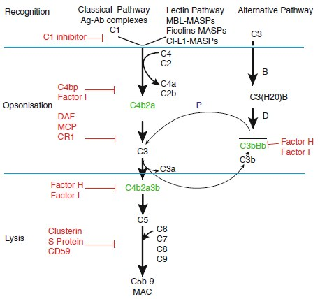
Fig 6.1The single most useful diagram in this Part. The three pathways run down the page in black; every regulator is in red, drawn as a bar across the arrow it blocks. Read it by the three horizontal bands on the left — recognition (C1 inhibitor), opsonisation (C4bp, factor I, DAF, MCP, CR1, factor H) and lysis (clusterin, S protein, CD59). Notice that the densest cluster of brakes is exactly at the C3 convertase, because that is where the amplification is.مفیدترین نمودار این بخش. سه مسیر با رنگ سیاه در صفحه پایین میروند؛ هر تنظیمکننده قرمز است و بهشکل میلهای روی پیکانی که مسدود میکند رسم شده. آن را با سه نوار افقی سمت چپ بخوانید — شناسایی (مهارکنندهٔ C1)، اپسونیزاسیون (C4bp، فاکتور I، DAF، MCP، CR1، فاکتور H) و لیز (کلاسترین، پروتئین S، CD59). توجه کنید انبوهترین خوشهٔ ترمزها دقیقاً روی C3 کانورتاز است، چون تقویت همانجاست.
6.2The Regulators, One by Oneتنظیمکنندهها، یکییکی
There are three mechanisms and three mechanisms only. Once you can say which of the three a protein uses, you have understood it.سه مکانیسم وجود دارد و فقط سه مکانیسم. همین که بتوانید بگویید یک پروتئین از کدامیک استفاده میکند، آن را فهمیدهاید.
Name decoder — the three verbs of complement regulationرمزگشای نام — سه فعل تنظیم کمپلمان
Decay
Pull the convertase apartکانورتاز را از هم باز کن
Bind the C4b or C3b and physically displace C2a or Bb. The convertase falls off; the C4b/C3b is still there but is now inertبه C4b یا C3b بچسب و C2a یا Bb را فیزیکی جابهجا کن. کانورتاز میافتد؛ C4b/C3b هنوز هست اما اکنون بیاثر است
Cofactor
Hold it still for the knifeبرای چاقو نگهش دار
Factor I is the only protease that destroys C3b and C4b, but it cannot work alone. A cofactor binds C3b first and presents it. Result: C3b → iC3b — permanent, irreversibleفاکتور I تنها پروتئازی است که C3b و C4b را نابود میکند، اما بهتنهایی کار نمیکند. کوفاکتور نخست به C3b میچسبد و آن را عرضه میکند. نتیجه: C3b → iC3b — دائمی و برگشتناپذیر
Block
Stop the poreمنفذ را متوقف کن
Either grab C5b67 while it is still soluble (S protein, clusterin) or sit in the membrane and refuse to let C9 polymerise (CD59)یا C5b67 را تا هنوز محلول است بگیر (پروتئین S، کلاسترین) یا در غشا بنشین و نگذار C9 پلیمریزه شود (CD59)
Serpin
Trap the proteaseپروتئاز را به دام بینداز
A suicide-substrate inhibitor. C1-INH is the only one here, and it acts upstream of everything elseمهارکنندهای از نوع بسترِ خودکشی. C1-INH تنها نمونهٔ اینجاست و بالادست همهچیز عمل میکند
Worked example — why the same job needs both DAF and MCP. DAF decays: it knocks C2a off C4b, which stops this convertase immediately but leaves C4b on the membrane, free to recruit a new C2 and start again. MCP is the cofactor: it hands that C4b to factor I, which cuts it into fragments that can never bind C2 again. DAF buys time; MCP makes it permanent. That is why a cell carries both, and why losing either one is not the same disease.مثال حلشده — چرا یک کار به هر دوی DAF و MCP نیاز دارد.DAFواپاشی میکند: C2a را از C4b میکَنَد، که این کانورتاز را فوراً متوقف میکند اما C4b را روی غشا باقی میگذارد، آزاد تا C2ی تازه جذب کند و از نو آغاز کند. MCPکوفاکتور است: همان C4b را به فاکتور I میسپارد که آن را به قطعاتی میبُرد که دیگر هرگز به C2 نمیچسبند. DAF وقت میخرد؛ MCP آن را دائمی میکند. به همین دلیل سلول هر دو را دارد، و به همین دلیل ازدستدادن هر یک، بیماری یکسانی نیست.
Table 6.2 The complement regulatory proteins — the master tableجدول ۶.۲ — پروتئینهای تنظیمی کمپلمان — جدول اصلی
Serpin. Binds the active site of C1r and C1s and drags them off C1q, so the classical pathway never starts. Does the same to the MASPsسرپین. به جایگاه فعال C1r و C1s میچسبد و آنها را از C1q میکَنَد، پس مسیر کلاسیک هرگز آغاز نمیشود. با MASPها هم همین میکند
Hereditary angioedema — and the mechanism is not complement (§6.4)آنژیوادم ارثی — و مکانیسمش کمپلمان نیست (بخش ۶.۴)
C4bp C4-binding proteinC4bp پروتئین متصلشونده به C4
Solubleمحلول
C4b CPLPC4bCPLP
Both. Decays C4b2a and acts as cofactor for factor I on C4bهر دو.C4b2a را واپاشی میکند و برای فاکتور I روی C4b کوفاکتور است
Both — and it is the protein that makes the alternative pathway self-tolerant. It binds sialic acid and heparan sulphate, which host cells carry and most bacteria do not. So factor H docks on your membranes, decays C3bBb there and delivers C3b to factor I; on a bacterium it cannot dock, and the loop runs freeهر دو — و همان پروتئینی است که مسیر آلترناتیو را خودتحمل میکند. به اسید سیالیک و هپاران سولفات میچسبد که سلولهای میزبان دارند و بیشتر باکتریها ندارند. پس فاکتور H روی غشاهای شما مینشیند، C3bBb را آنجا واپاشی میکند و C3b را به فاکتور I میسپارد؛ روی باکتری نمیتواند بنشیند و حلقه آزاد میدود
Atypical HUS, C3 glomerulopathy, age-related macular degeneration — all diseases of an alternative pathway that will not switch offسندرم اورمیک-همولیتیک آتیپیک، گلومرولوپاتی C3، دژنراسیون ماکولای وابسته به سن — همه بیماریِ مسیر آلترناتیوی که خاموش نمیشود
Factor Iفاکتور I
Solubleمحلول
C3b and C4b — all pathwaysC3b و C4b — همهٔ مسیرها
The knife. A serine protease that cleaves C3b to iC3b (and on to C3d) and C4b to C4c + C4d. Absolutely requires a cofactor. This is the only irreversible step in the whole regulatory systemچاقو. سرینپروتئازی که C3b را به iC3b (و سپس C3d) و C4b را به C4c + C4d میشکند. حتماً به کوفاکتور نیاز دارد. این تنها گام برگشتناپذیر کل سامانهٔ تنظیمی است
C3 is consumed continuously → a secondary C3 deficiency with severe pyogenic infectionC3 پیوسته مصرف میشود ← کمبود ثانویهٔ C3 با عفونت چرکی شدید
Decay only. Displaces C2a and Bb from convertases forming on a host membrane. Works on all three pathways because all three converge on a C3 convertaseفقط واپاشی.C2a و Bb را از کانورتازهایی که روی غشای میزبان شکل میگیرند جابهجا میکند. روی هر سه مسیر کار میکند چون هر سه به یک C3 کانورتاز میرسند
With CD59, lost in PNH — see belowهمراه با CD59، در PNH از دست میرود — پایینتر ببینید
Cofactor only. Presents C3b/C4b on the host membrane to factor I, converting it to iC3bفقط کوفاکتور.C3b/C4b روی غشای میزبان را به فاکتور I عرضه میکند و به iC3b بدل میشود
Atypical HUSسندرم اورمیک-همولیتیک آتیپیک
CR1 / CD35CR1 / CD35
Membraneغشایی
C3b, C4bC3b، C4b
Both — decay and cofactor. It is also the receptor that erythrocytes use to carry immune complexes to the liver (§6.3), so the same molecule does regulation and clearanceهر دو — هم واپاشی هم کوفاکتور. همچنین همان گیرندهای است که گلبول قرمز با آن کمپلکسهای ایمنی را به کبد میبرد (بخش ۶.۳)، پس یک مولکول هم تنظیم میکند هم پاکسازی
Low CR1 on red cells is found in SLE — immune complexes are not clearedکاهش CR1 روی گلبول قرمز در لوپوس دیده میشود — کمپلکسهای ایمنی پاک نمیشوند
S protein (vitronectin) Clusterin (Sp40,40)پروتئین S (ویترونکتین) کلاسترین (Sp40,40)
Solubleمحلول
C5b67 TPC5b67TP
Block, fluid phase. Binds the nascent C5b67 complex while it is still in solution and masks its hydrophobic site, so it can never insert into a membraneانسداد در فاز مایع. به کمپلکس نوپدید C5b67 تا هنوز در محلول است میچسبد و جایگاه آبگریزش را میپوشاند، پس هرگز نمیتواند در غشا فرو رود
Bystander lysis of innocent cells next to the targetلیز تماشاگرِ سلولهای بیگناهِ مجاور هدف
Block, on the membrane. Binds C8 and C9 in the assembling complex and prevents C9 polymerisation. The MAC stalls before it becomes a channelانسداد روی غشا. در کمپلکس در حال مونتاژ به C8 و C9 میچسبد و از پلیمرشدن C9 جلوگیری میکند. MAC پیش از آنکه کانال شود متوقف میماند
With DAF, lost in PNH → intravascular haemolysisهمراه با DAF، در PNH از دست میرود ← همولیز داخلعروقی
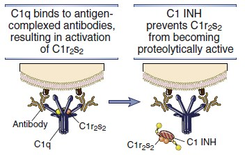
Fig 6.2C1-INH. Left: C1q binds antigen-complexed antibody and C1r₂s₂ becomes active. Right: C1-INH binds C1r₂s₂ and drags it off the C1q stalks before it can cleave anything.C1-INH. چپ: C1q به آنتیبادیِ کمپلکسشده با آنتیژن میچسبد و C1r₂s₂ فعال میشود. راست: C1-INH به C1r₂s₂ میچسبد و پیش از آنکه چیزی را بشکند آن را از ساقههای C1q میکَنَد.
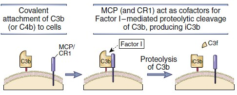
Fig 6.3MCP/CR1 + factor I. C3b attaches covalently to a host cell (left). MCP or CR1 presents it to factor I, which cuts it, releasing the small fragment C3f and leaving iC3b — still an opsonin, no longer able to build a convertase.MCP/CR1 + فاکتور I.C3b بهطور کووالانت به سلول میزبان میچسبد (چپ). MCP یا CR1 آن را به فاکتور I عرضه میکند که آن را میبُرد، قطعهٔ کوچک C3f آزاد میشود و iC3b میماند — هنوز اپسونین است، اما دیگر نمیتواند کانورتاز بسازد.
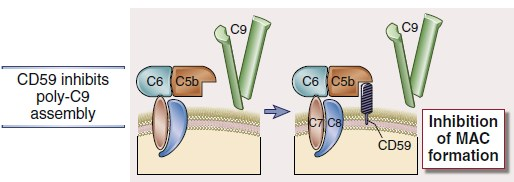
Fig 6.4CD59 (MIRL). C9 is about to polymerise onto C5b678; CD59 in the host membrane inserts itself between them, and MAC formation is inhibited.CD59 (MIRL).C9 میخواهد روی C5b678 پلیمریزه شود؛ CD59 مستقر در غشای میزبان میانشان مینشیند و تشکیل MACمهار میشود.
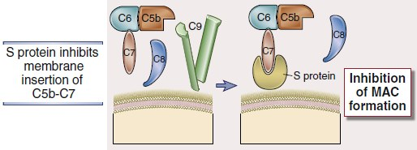
Fig 6.5S protein (vitronectin). The same endpoint by a different route — C5b67 is capped in the fluid phase, so it never reaches the bilayer at all. Compare the two figures: CD59 defends one particular cell; S protein protects every cell in the neighbourhood.پروتئین S (ویترونکتین). همان نقطهٔ پایان از راهی دیگر — C5b67در فاز مایع پوشانده میشود، پس اصلاً به دولایه نمیرسد. دو شکل را مقایسه کنید: CD59 از یک سلول معیّن دفاع میکند؛ پروتئین S از همهٔ سلولهای همسایه.
Absence proves function — paroxysmal nocturnal haemoglobinuria (PNH)نبودش کارش را ثابت میکند — هموگلوبینوری حملهای شبانه
An acquired mutation in the PIGA gene of a haematopoietic stem cell destroys the ability to make the GPI anchor. Every protein that reaches the membrane by that anchor is therefore missing from the entire clone — and two of them are DAF (CD55) and CD59. Nothing else about complement is abnormal: C3 is normal, all three pathways are normal, tickover is normal. The red cells are simply no longer fireproofed, so the everyday, physiological tickover of the alternative pathway lyses them. The result is chronic intravascular haemolysis with haemoglobinuria, and thrombosis.جهشی اکتسابی در ژن PIGA یک سلول بنیادی خونساز، توانایی ساخت لنگر GPI را از بین میبرد. پس هر پروتئینی که با آن لنگر به غشا میرسد در کل آن کلون غایب است — و دو تای آنها DAF (CD55) و CD59 هستند. هیچ چیز دیگری در کمپلمان غیرطبیعی نیست: C3 طبیعی است، هر سه مسیر طبیعیاند، تیکاُور طبیعی است. گلبولهای قرمز فقط دیگر نسوز نیستند، پس تیکاُورِ روزمره و فیزیولوژیک مسیر آلترناتیو آنها را لیز میکند. نتیجه همولیز مزمن داخلعروقی با هموگلوبینوری، و ترومبوز است.
Read what this proves. It proves that complement is attacking your red cells every single day and that CD55 and CD59 are the only reason you do not notice. It also predicts the treatment, and the prediction is correct: eculizumab, a monoclonal antibody against C5 (§4.2, Fig 4.5), blocks the terminal pathway and stops the haemolysis.ببینید این چه چیزی را ثابت میکند. ثابت میکند کمپلمان هر روز به گلبولهای قرمز شما حمله میکند و CD55 و CD59 تنها دلیل بیخبری شمایند. درمان را هم پیشبینی میکند و پیشبینی درست است: اکولیزوماب، آنتیبادی مونوکلونال ضد C5 (بخش ۴.۲، شکل ۴.۵)، مسیر انتهایی را میبندد و همولیز را متوقف میکند.
Exam Trap — DAF, MCP, CD59: which one, which step?دام امتحانی — DAF، MCP، CD59: کدامیک، کدام گام؟
All three are membrane proteins on host cells, all three protect self, and questions routinely swap them. Fix them by the step, not the name:هر سه پروتئین غشایی سلولهای میزباناند، هر سه از خودی محافظت میکنند، و سؤالها مرتب جابهجایشان میکنند. آنها را با گام، نه با نام، تثبیت کنید:
DAF/CD55 → the convertase, decay. Acts before C5 is ever cleaved.DAF/CD55 ← کانورتاز، واپاشی. پیش از آنکه C5 اصلاً شکسته شود عمل میکند.
MCP/CD46 → the C3b itself, cofactor for factor I. Same stage as DAF, different verb.MCP/CD46 ← خودِ C3b، کوفاکتور فاکتور I. همان مرحلهٔ DAF، فعل متفاوت.
CD59/MIRL → the MAC, blocks C9. Acts after everything upstream has already succeeded.CD59/MIRL ← MAC، C9 را مسدود میکند. پس از آنکه همهٔ بالادست پیشاپیش موفق شده عمل میکند.
And one more that is often missed: C4bp and factor H are the soluble versions of the same two jobs — C4bp does for C4b what DAF+MCP do, and factor H does it for C3b. Membrane regulators protect the cell they sit on; soluble regulators patrol the plasma.و نکتهای که بارها از قلم میافتد: C4bp و فاکتور H نسخهٔ محلولِ همان دو کارند — C4bp برای C4b همان میکند که DAF+MCP میکنند، و فاکتور H همان را برای C3b. تنظیمکنندههای غشایی از سلولی که رویش نشستهاند محافظت میکنند؛ تنظیمکنندههای محلول در پلاسما گشت میزنند.
6.3The Six Functions of Complementشش عملکرد کمپلمان
The lecture lists six. Five of them are performed by fragments you have already met, and the sixth explains why complement, coagulation and the kinin system keep turning up in the same diseases.درس شش تا را فهرست میکند. پنج تای آنها را قطعاتی انجام میدهند که پیشتر دیدهاید، و ششمی توضیح میدهد چرا کمپلمان، انعقاد و سامانهٔ کینین مدام در بیماریهای یکسان سر بر میآورند.
Table 6.3 The six functions at a glanceجدول ۶.۳ — شش عملکرد در یک نگاه
#
Functionعملکرد
The molecule that does itمولکولی که انجامش میدهد
Receptor / targetگیرنده / هدف
Resultنتیجه
1
Cytolysisسیتولیز
C5b–C9 (MAC)C5b–C9 (MAC)
The lipid bilayer itself — no receptorخودِ دولایهٔ لیپیدی — بدون گیرنده
Osmotic lysis. Mainly Gram-negative bacteria and enveloped virusesلیز اسمزی. عمدتاً باکتریهای گرممنفی و ویروسهای پوششدار
2
Opsonisationاپسونیزاسیون
C3b, C4b, iC3bC3b، C4b، iC3b
CR1, CR3, CR4 on phagocytesCR1، CR3، CR4 روی فاگوسیتها
Enhanced phagocytosis. Quantitatively the most important antibacterial function of complementفاگوسیتوز تقویتشده. از نظر کمّی مهمترین عملکرد ضدباکتریایی کمپلمان
3
Inflammationالتهاب
C5a, C3a, C4a — the anaphylatoxinsC5a، C3a، C4a — آنافیلاتوکسینها
C5aR, C3aR, C4aR on mast cells, neutrophils, monocytes, smooth muscleC5aR، C3aR، C4aR روی ماستسل، نوتروفیل، مونوسیت، عضلهٔ صاف
Mast-cell degranulation, vascular permeability, smooth-muscle contraction; C5a is also the chemotaxinدگرانولاسیون ماستسل، نفوذپذیری عروقی، انقباض عضلهٔ صاف؛ C5a کموتاکسین هم هست
4
Immune-complex clearanceپاکسازی کمپلکس ایمنی
C3b deposited on the complexC3b رسوبکرده روی کمپلکس
CR1 on erythrocytesCR1 روی گلبول قرمز
Complexes are ferried to liver and spleen and stripped off by macrophagesکمپلکسها به کبد و طحال برده و توسط ماکروفاژها جدا میشوند
CR2/CD21 on B cells and follicular dendritic cellsCR2/CD21 روی سلول B و سلول دندریتیک فولیکولی
Lowers the B-cell activation threshold; antigen retention for memoryآستانهٔ فعالسازی سلول B را پایین میآورد؛ نگهداشت آنتیژن برای حافظه
6
Cross-talk with other enzyme systemsگفتوگو با سامانههای آنزیمی دیگر
Shared proteases and shared inhibitorsپروتئازها و مهارکنندههای مشترک
Coagulation, fibrinolytic and kinin cascadesآبشارهای انعقاد، فیبرینولیز و کینین
One cascade activates the others; this is why a single inhibitor defect causes a non-complement diseaseهر آبشار دیگری را فعال میکند؛ به همین سبب نقص یک مهارکنندهٔ واحد، بیماریای غیرکمپلمانی میسازد
1 & 2 — Cytolysis and opsonisation۱ و ۲ — سیتولیز و اپسونیزاسیون
Cytolysis is §5.6 and needs nothing added: C5b–C9 makes the MAC and the cell dies osmotically. What is worth stating plainly is the relative importance. Lysis only works on cells with an exposed, thin outer membrane — chiefly Gram-negative bacteria (especially Neisseria) and enveloped viruses. A Gram-positive organism has a thick peptidoglycan wall that the MAC cannot reach through, and is essentially resistant to lysis. Against those, complement works by opsonisation instead — which is why a C3 deficiency is so much worse than a C9 deficiency.سیتولیز همان بخش ۵.۶ است و چیزی به آن افزوده نمیشود: C5b–C9 همان MAC را میسازد و سلول با اسمز میمیرد. آنچه ارزش گفتن صریح دارد اهمیت نسبی است. لیز فقط روی سلولهایی کار میکند که غشای بیرونی نازک و در معرض دارند — عمدتاً باکتریهای گرممنفی (بهویژه نایسریا) و ویروسهای پوششدار. ارگانیسم گرممثبت دیوارهٔ ضخیم پپتیدوگلیکانی دارد که MAC نمیتواند از آن بگذرد و عملاً به لیز مقاوم است. در برابر آنها کمپلمان با اپسونیزاسیون کار میکند — و برای همین کمبود C3 بسیار بدتر از کمبود C9 است.
Fig 6.6Function 1 — cytolysis. C3b binds the bacterium, the late components assemble, the MAC forms, and the organism dies by osmotic lysis.عملکرد ۱ — سیتولیز.C3b به باکتری میچسبد، اجزای دیررس مونتاژ میشوند، MAC شکل میگیرد و ارگانیسم با لیز اسمزی میمیرد.
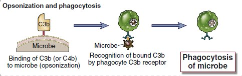
Fig 6.7Function 2 — opsonisation. C3b (or C4b) coats the microbe; the phagocyte's C3b receptor recognises the coat; the microbe is eaten. Opsonin is Greek for “seasoning” — complement makes the bug taste good.عملکرد ۲ — اپسونیزاسیون.C3b (یا C4b) میکروب را میپوشاند؛ گیرندهٔ C3b فاگوسیت پوشش را میشناسد؛ میکروب بلعیده میشود. اپسونین در یونانی یعنی «چاشنی» — کمپلمان میکروب را خوشطعم میکند.
Which opsonin, which receptorکدام اپسونین، کدام گیرنده
C3b → CR1 (CD35).iC3b → CR3 (CD11b/CD18, Mac-1) and CR4 (CD11c/CD18). This is the reason factor I's product is called inactivated C3b and not destroyed C3b: cutting C3b to iC3b abolishes its ability to build a convertase but leaves it a perfectly good opsonin, now read by a different pair of receptors. Regulation does not switch opsonisation off; it switches amplification off and leaves the flag flying.C3b → CR1 (CD35). · iC3b → CR3 (CD11b/CD18، Mac-1) و CR4 (CD11c/CD18). · به همین دلیل فرآوردهٔ فاکتور I را غیرفعالشده مینامند نه نابودشده: بریدن C3b به iC3b توانایی ساخت کانورتاز را از بین میبرد اما آن را اپسونینی کاملاً کارآمد باقی میگذارد که حالا جفت گیرندهٔ دیگری آن را میخوانند. تنظیم، اپسونیزاسیون را خاموش نمیکند؛ تقویت را خاموش میکند و پرچم را برافراشته نگه میدارد.
3 — Inflammation: the anaphylatoxins۳ — التهاب: آنافیلاتوکسینها
The small fragments — the ones with the letter a — do not stay on the surface. They diffuse away into the tissue, and there they are hormones of inflammation. Three of them are anaphylatoxins, but only one is also a chemotaxin.قطعات کوچک — آنها که حرف a دارند — روی سطح نمیمانند. در بافت پخش میشوند و آنجا هورمونهای التهاباند. سه تای آنها آنافیلاتوکسیناند، اما تنها یکی کموتاکسین هم هست.
The potency order, and the one that is differentترتیب قدرت، و آن یکی که فرق دارد
C5a > C3a > C4aC5a > C3a > C4a
All three are anaphylatoxins: they bind their receptors on mast cells and basophils and trigger degranulation, giving histamine release, increased vascular permeability and smooth-muscle contraction — the same clinical picture as anaphylaxis, without any IgE. C5a alone is also a chemotaxin, and a powerful one: it is the signal that brings neutrophils and monocytes out of the vessel and along the gradient to the site. If a question asks for the complement chemotactic factor, the answer is always C5a.هر سه آنافیلاتوکسیناند: به گیرندههای خود روی ماستسل و بازوفیل میچسبند و دگرانولاسیون را میاندازند، که آزادشدن هیستامین، افزایش نفوذپذیری عروقی و انقباض عضلهٔ صاف میدهد — همان تصویر بالینی آنافیلاکسی، بدون هیچ IgE. تنها C5a کموتاکسین هم هست، آن هم قدرتمند: همان سیگنالی که نوتروفیل و مونوسیت را از رگ بیرون میکشد و در امتداد شیب به محل میآورد. اگر سؤالی عامل کموتاکتیک کمپلمان را بخواهد، پاسخ همیشه C5a است.
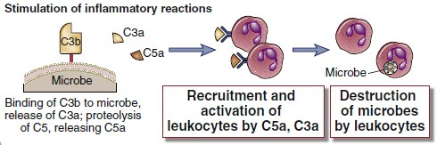
Fig 6.8 Where the anaphylatoxins come from: C3b binds the microbe, C3a is released, C5 is then cleaved and C5a is released. The two fragments recruit and activate leukocytes, which destroy the microbe.آنافیلاتوکسینها از کجا میآیند: C3b به میکروب میچسبد، C3a آزاد میشود، سپس C5 شکسته و C5a آزاد میشود. این دو قطعه لکوسیتها را فرا میخوانند و فعال میکنند تا میکروب را نابود کنند.
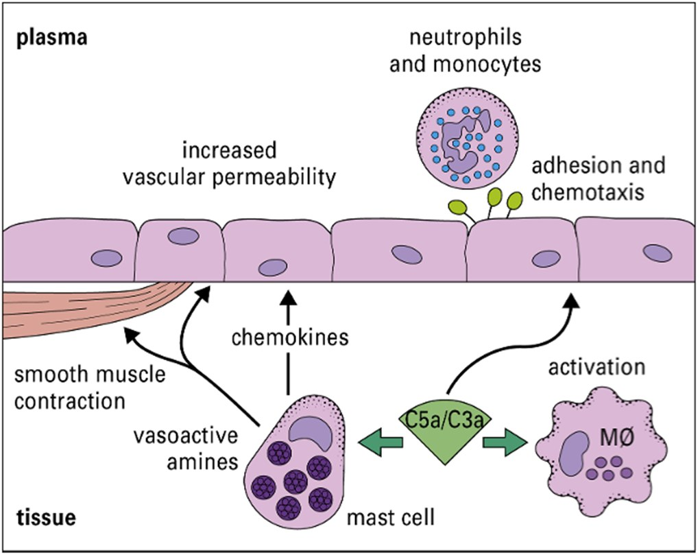
Fig 6.9 The same two fragments seen from the tissue side. C5a/C3a act on the mast cell (vasoactive amines → increased permeability, smooth-muscle contraction), on the endothelium (adhesion molecules and chemokines → neutrophil and monocyte emigration) and on the macrophage (activation). Every cardinal sign of acute inflammation is on this one diagram.همان دو قطعه، اینبار از سمت بافت. C5a/C3a روی ماستسل (آمینهای وازواکتیو ← افزایش نفوذپذیری، انقباض عضلهٔ صاف)، روی اندوتلیوم (مولکولهای چسبندگی و کموکاینها ← مهاجرت نوتروفیل و مونوسیت) و روی ماکروفاژ (فعالسازی) اثر میگذارند. همهٔ نشانههای اصلی التهاب حاد در همین یک نمودار است.
Mechanism — how a red cell becomes a rubbish lorryمکانیسم — گلبول قرمز چگونه کامیون زباله میشود
Antigen and antibody form a soluble immune complex in the circulation.Soluble is the dangerous state. A complex that stays dissolved travels until it lodges somewhere with high filtration pressure — glomerulus, joint synovium, small vessel wall — and causes disease there.آنتیژن و آنتیبادی در گردش خون کمپلکس ایمنی محلول میسازند.محلولبودن حالت خطرناک است. کمپلکسی که حلشده بماند سفر میکند تا جایی با فشار فیلتراسیون بالا گیر کند — گلومرول، سینوویوم مفصل، دیوارهٔ رگ کوچک — و همانجا بیماری بسازد.
The complex activates the classical pathway, and C3b is deposited all over it.Two things happen at once. The C3b is a handle, and the insertion of C3b between the antibody molecules physically breaks up the lattice, keeping the complex small and soluble instead of letting it precipitate.کمپلکس مسیر کلاسیک را فعال میکند و C3b سرتاسر آن رسوب میکند.همزمان دو اتفاق میافتد. C3b یک دستگیره است، و جاگرفتن C3b میان مولکولهای آنتیبادی، شبکه را فیزیکی میشکند و کمپلکس را کوچک و محلول نگه میدارد بهجای آنکه رسوب کند.
CR1 on erythrocytes grips the C3b.Red cells carry far more CR1 in total than all the leukocytes combined, simply because there are so many of them. They are not phagocytes — they are transport.CR1 روی گلبولهای قرمزC3b را میگیرد.گلبولهای قرمز در مجموع بسیار بیشتر از همهٔ لکوسیتها رویهم CR1 دارند، صرفاً چون شمارشان زیاد است. آنها فاگوسیت نیستند — وسیلهٔ حملاند.
The red cell carries the complex through the circulation to the liver and spleen.گلبول قرمز کمپلکس را در گردش خون به کبد و طحال میبرد.
Fixed macrophages there strip the complex off and digest it; the erythrocyte is released undamaged and returns to circulation.This is the elegant part — the carrier is not consumed. The same red cell does the job again and again.ماکروفاژهای ثابت آنجا کمپلکس را جدا میکنند و هضمش میکنند؛ گلبول قرمز سالم رها میشود و به گردش بازمیگردد.بخش ظریف ماجرا همین است — حامل مصرف نمیشود. همان گلبول قرمز این کار را بارها و بارها انجام میدهد.
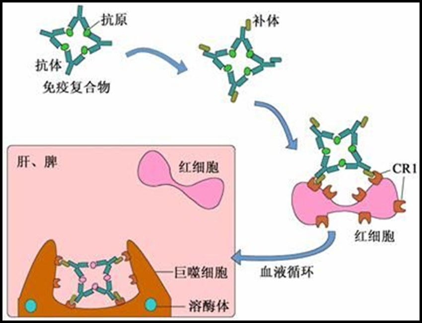
Fig 6.10 Immune-complex clearance. Top left, the complex of antigen (抗原) and antibody (抗体); top right, complement (补体) is deposited on it; right, the complex is gripped by CR1 on an erythrocyte (红细胞) and carried in the blood (血液循环) to liver and spleen (肝、脾), where a macrophage (巨噬细胞) strips it off into its lysosomes (溶酶体).پاکسازی کمپلکس ایمنی. بالا چپ، کمپلکس آنتیژن (抗原) و آنتیبادی (抗体)؛ بالا راست، کمپلمان (补体) روی آن رسوب میکند؛ راست، کمپلکس را CR1 روی گلبول قرمز (红细胞) میگیرد و با خون (血液循环) به کبد و طحال (肝、脾) میبرد، جایی که ماکروفاژ (巨噬细胞) آن را جدا کرده و به لیزوزومهایش (溶酶体) میفرستد.
Clinical Correlation — the complement paradox of SLEارتباط بالینی — پارادوکس کمپلمانی لوپوس
Complement causes tissue damage in immune-complex disease — and complement deficiency causes immune-complex disease. Both statements are true, and this mechanism is why. If the classical pathway cannot deposit C3b on complexes, they are never handed to erythrocyte CR1, never delivered to the liver, and instead circulate until they precipitate in vessel walls, glomeruli and skin. That is why deficiency of C1q, C1r, C1s, C4 or C2 produces a lupus-like illness, and why C1q deficiency has the highest penetrance for SLE of any known genetic defect.کمپلمان در بیماری کمپلکس ایمنی آسیب بافتی ایجاد میکند — و کمبود کمپلمان هم بیماری کمپلکس ایمنی ایجاد میکند. هر دو گزاره درستاند، و مکانیسم بالا دلیلش است. اگر مسیر کلاسیک نتواند C3b را روی کمپلکسها بنشاند، آنها هرگز به CR1 گلبول قرمز سپرده نمیشوند، هرگز به کبد نمیرسند و بهجایش میگردند تا در دیوارهٔ رگ، گلومرول و پوست رسوب کنند. برای همین کمبود C1q، C1r، C1s، C4 یا C2 بیماری شبهلوپوسی میسازد و برای همین کمبود C1q بالاترین نفوذ را در ایجاد لوپوس میان همهٔ نقصهای ژنتیکی شناختهشده دارد.
The laboratory consequence. In active SLE, complement is being consumed by complexes, so C3 and C4 fall — low complement is a marker of disease activity. In ordinary acute inflammation complement is an acute-phase protein and rises (§5.1). The same measurement means opposite things, and the difference is whether complement is being made or being eaten.پیامد آزمایشگاهی. در لوپوس فعال، کمپلکسها کمپلمان را مصرف میکنند، پس C3 و C4 پایین میآیند — کمپلمان پایین نشانگر فعالیت بیماری است. در التهاب حادِ معمول، کمپلمان پروتئین فاز حاد است و بالا میرود (بخش ۵.۱). یک اندازهگیری واحد، دو معنای متضاد؛ و تفاوت در این است که کمپلمان ساخته میشود یا خورده میشود.
Complement is usually filed under innate immunity, and the lecture's fifth function is the correction to that. Complement is the bridge: it is how an innate recognition event is converted into a stronger, longer antibody response. The lecture lists five sub-functions.کمپلمان را معمولاً ذیل ایمنی ذاتی میگذارند، و عملکرد پنجمِ درس همین را تصحیح میکند. کمپلمان پل است: راهی که با آن یک رویداد شناسایی ذاتی به پاسخ آنتیبادی قویتر و ماندگارتر تبدیل میشود. درس پنج زیرعملکرد را فهرست میکند.
Table 6.4 The five ways complement serves adaptive immunityجدول ۶.۴ — پنج راهی که کمپلمان به ایمنی اکتسابی خدمت میکند
Sub-functionزیرعملکرد
Howچگونه
1. Induction of the immune response۱. القای پاسخ ایمنی
C3d left on the antigen after factor I has finished with C3b binds CR2 (CD21) on the B cell. CR2 is part of the CD21–CD19–CD81 co-receptor complex, which is physically coupled to the BCR. Engaging both at once lowers the activation threshold by up to 1000-fold — the same antigen now needs a thousand times less of itself to trigger the B cellC3d که پس از پایان کار فاکتور I روی آنتیژن میماند، به CR2 (CD21) روی سلول B میچسبد. CR2 بخشی از کمپلکس گیرندهٔ کمکی CD21–CD19–CD81 است که فیزیکی به BCR جفت شده. درگیرکردن همزمان هر دو، آستانهٔ فعالسازی را تا هزار برابر پایین میآورد — همان آنتیژن اکنون هزار بار کمتر لازم است تا سلول B را بیندازد
2. Proliferation and differentiation of immune cells۲. تکثیر و تمایز سلولهای ایمنی
The same co-receptor signal drives the B cell into division and towards plasma-cell differentiationهمان سیگنال گیرندهٔ کمکی، سلول B را به تقسیم و بهسوی تمایز پلاسماسل میراند
3. The effector stage of the response۳. مرحلهٔ عمل پاسخ
Antibody made at the end of the response works largely through complement — opsonisation and lysis are complement functions that antibody merely targetsآنتیبادی ساختهشده در پایان پاسخ، عمدتاً از راه کمپلمان کار میکند — اپسونیزاسیون و لیز عملکردهای کمپلماناند که آنتیبادی فقط هدفگیریشان میکند
4. Immune memory۴. حافظهٔ ایمنی
Follicular dendritic cells in the germinal centre hold antigen on their surface via CR2 for months to years. That retained antigen is what selects high-affinity B cells and maintains memoryسلولهای دندریتیک فولیکولی در مرکز زایا، آنتیژن را ماهها تا سالها از راه CR2 روی سطح خود نگه میدارند. همان آنتیژن نگهداشتهشده است که سلولهای B با میل ترکیبی بالا را گزینش میکند و حافظه را حفظ میکند
5. Clearance of antigen۵. پاکسازی آنتیژن
Function 4 above — the erythrocyte–CR1 transport systemهمان عملکرد ۴ بالا — سامانهٔ حمل گلبول قرمز–CR1
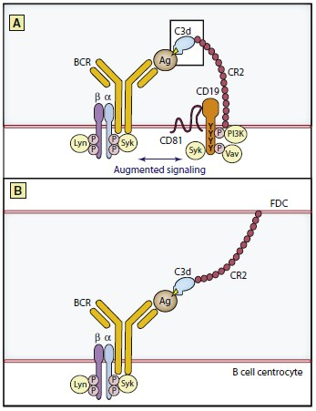
Fig 6.11A: antigen carrying C3d engages the BCR and CR2 simultaneously; CR2 recruits CD19, which is phosphorylated and brings in PI3K and Vav — augmented signalling. B: the same C3d–CR2 link on a follicular dendritic cell presenting antigen to a centrocyte.A: آنتیژنی که C3d دارد همزمان BCR و CR2 را درگیر میکند؛ CR2 سراغ CD19 میآید که فسفریله میشود و PI3K و Vav را میآورد — سیگنال تقویتشده. B: همان پیوند C3d–CR2 روی سلول دندریتیک فولیکولی که آنتیژن را به سانتروسیت عرضه میکند.
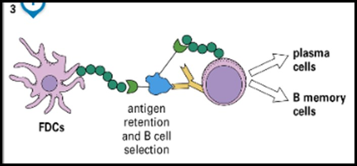
Fig 6.12Antigen retention and B-cell selection. Follicular dendritic cells hold complement-coated antigen in the germinal centre; B cells that bind it best are selected to become plasma cells and memory B cells. This is complement contributing directly to immunological memory.نگهداشت آنتیژن و گزینش سلول B. سلولهای دندریتیک فولیکولی آنتیژنِ پوشیده از کمپلمان را در مرکز زایا نگه میدارند؛ سلولهای Bای که بهتر به آن میچسبند گزینش میشوند تا پلاسماسل و سلول B خاطره شوند. این یعنی مشارکت مستقیم کمپلمان در حافظهٔ ایمنی.
6 — Cross-talk with the other plasma cascades۶ — گفتوگو با دیگر آبشارهای پلاسمایی
Complement is one of four plasma serine-protease cascades, and the other three are coagulation, fibrinolysis and the kinin system. They share substrates, share activators and — crucially — share inhibitors. Thrombin can cleave C3 and C5 directly; plasmin activates C3; factor XIIa activates the kinin system; and C1-INH inhibits not only C1r/C1s and the MASPs but also kallikrein, factor XIIa and plasmin.کمپلمان یکی از چهار آبشار سرینپروتئازی پلاسماست، و سه تای دیگر انعقاد، فیبرینولیز و سامانهٔ کینیناند. بستر مشترک، فعالکنندهٔ مشترک و — مهمتر از همه — مهارکنندهٔ مشترک دارند. ترومبین میتواند مستقیماً C3 و C5 را بشکند؛ پلاسمین C3 را فعال میکند؛ فاکتور XIIa سامانهٔ کینین را فعال میکند؛ و C1-INH نهتنها C1r/C1s و MASPها بلکه کالیکرئین، فاکتور XIIa و پلاسمین را هم مهار میکند.
Why this apparently dry fact is the key to the next sectionچرا این واقعیتِ ظاهراً خشک، کلید بخش بعد است
Hold two things together: C1-INH restrains four cascades, not one, and bradykinin — the kinin system's product — is a powerful vasodilator that makes vessels leak. Now predict what happens in a patient who has half the normal C1-INH. You should predict uncontrolled bradykinin, not uncontrolled complement. That prediction is correct, and it is the whole pathophysiology of hereditary angioedema. Do not memorise that disease — derive it.دو چیز را کنار هم نگه دارید: C1-INH چهار آبشار را مهار میکند، نه یکی، و برادیکینین — فرآوردهٔ سامانهٔ کینین — گشادکنندهٔ قوی عروق است که رگها را نشتدار میکند. حالا پیشبینی کنید در بیماری که نیمی از C1-INH طبیعی را دارد چه میشود. باید برادیکینینِ مهارنشده را پیشبینی کنید، نه کمپلمانِ مهارنشده. این پیشبینی درست است و تمام پاتوفیزیولوژی آنژیوادم ارثی همین است. آن بیماری را حفظ نکنید — استنتاجش کنید.
6.4Complement and Diseaseکمپلمان و بیماری
Every complement disease in this lecture is one of three sentences: a component is missing, a regulator is missing, or activation is appropriate but excessive. Sort any clinical vignette into one of those three and the answer follows.هر بیماری کمپلمانی این درس، یکی از سه جمله است: جزئی غایب است، تنظیمکنندهای غایب است، یا فعالسازی بجاست اما بیش از حد. هر سناریوی بالینی را در یکی از این سه بگذارید و پاسخ خودش میآید.
Table 6.5 Complement deficiencies and what they predictجدول ۶.۵ — کمبودهای کمپلمان و آنچه پیشبینی میکنند
What is missingچه چیزی غایب است
Clinical consequenceپیامد بالینی
Why — derive it from the functionچرا — از روی عملکرد استنتاجش کنید
Immune-complex disease — SLE-like illness, glomerulonephritis, vasculitis. C2 deficiency is the commonest complement deficiency in Europeansبیماری کمپلکس ایمنی — بیماری شبهلوپوس، گلومرولونفریت، واسکولیت. کمبود C2 شایعترین کمبود کمپلمانی در اروپاییتبارهاست
Function 4 fails: no C3b on the complexes, no handle for erythrocyte CR1, so complexes circulate and precipitate in tissue. Infection risk is comparatively mild because the alternative pathway still delivers C3b onto microbesعملکرد ۴ شکست میخورد: C3bای روی کمپلکسها نیست، دستگیرهای برای CR1 گلبول قرمز نیست، پس کمپلکسها میگردند و در بافت رسوب میکنند. خطر عفونت نسبتاً خفیف است چون مسیر آلترناتیو هنوز C3b را روی میکروبها میرساند
C3C3
The most severe of all. Severe, recurrent pyogenic infection from infancy — S. pneumoniae, H. influenzae, S. aureus, Neisseria — plus immune-complex diseaseشدیدترینِ همه.عفونت چرکی شدید و مکرر از نوزادی — پنوموکوک، هموفیلوس آنفلوانزا، استافیلوکوک اورئوس، نایسریا — بهعلاوهٔ بیماری کمپلکس ایمنی
C3 is the single point through which all three pathways pass. Lose it and you lose opsonisation (function 2), the MAC (function 1), the anaphylatoxin C3a and the chemotaxin C5a (function 3), immune-complex clearance (function 4) and the C3d co-receptor signal (function 5). Five of the six functions fail at once — that is the whole explanation for its severityC3نقطهٔ واحدی است که هر سه مسیر از آن میگذرند. از دستش بدهید و اپسونیزاسیون (عملکرد ۲)، MAC (عملکرد ۱)، آنافیلاتوکسین C3a و کموتاکسین C5a (عملکرد ۳)، پاکسازی کمپلکس ایمنی (عملکرد ۴) و سیگنال گیرندهٔ کمکی C3d (عملکرد ۵) را از دست دادهاید. پنج تا از شش عملکرد همزمان میافتند — تمام توضیح شدتش همین است
Recurrent Neisseria infection — meningococcal meningitis and disseminated gonococcal infection — and remarkably little elseعفونت مکرر نایسریا — مننژیت مننگوکوکی و عفونت منتشر گنوکوکی — و بهطرز چشمگیری چیز دیگری نه
Only function 1 is lost. Opsonisation still works, so most bacteria are still handled — except Neisseria, which is a Gram-negative diplococcus that resists phagocytosis and against which the MAC is the main defence. Recurrent meningococcal disease = check the terminal componentsفقط عملکرد ۱ از دست میرود. اپسونیزاسیون هنوز کار میکند، پس بیشتر باکتریها هنوز مهار میشوند — بهجز نایسریا که دیپلوکوک گرممنفی مقاوم به فاگوسیتوز است و MAC دفاع اصلی در برابر آن. بیماری مننگوکوکی مکرر = اجزای انتهایی را بررسی کن
MBLMBL
Recurrent infection in infancy, often mild; frequently asymptomatic in adultsعفونت مکرر در شیرخوارگی، اغلب خفیف؛ در بزرگسالان مکرراً بدون علامت
The lectin pathway matters most in the window between the loss of maternal IgG and the maturation of the infant's own antibody responseمسیر لکتینی بیشترین اهمیت را در پنجرهٔ میان ازدسترفتن IgG مادری و بلوغ پاسخ آنتیبادی خودِ شیرخوار دارد
Factor H or factor Iفاکتور H یا فاکتور I
Atypical haemolytic uraemic syndrome, C3 glomerulopathy, and a secondary C3 deficiency with pyogenic infectionسندرم اورمیک-همولیتیک آتیپیک، گلومرولوپاتی C3، و کمبود ثانویهٔ C3 با عفونت چرکی
The alternative pathway never switches off, so C3 is consumed to exhaustion. The patient ends up phenotypically C3-deficient although the C3 gene is normalمسیر آلترناتیو هرگز خاموش نمیشود، پس C3 تا پایان مصرف میشود. بیمار فنوتیپاً کمبود C3 پیدا میکند هرچند ژن C3 طبیعی است
§6.2 — the host cell has lost its fireproofing and physiological tickover lyses itبخش ۶.۲ — سلول میزبان پوشش نسوزش را از دست داده و تیکاُور فیزیولوژیک آن را لیز میکند
C1-INHC1-INH
Hereditary angioedema — recurrent, localised, non-itchy tissue swellingآنژیوادم ارثی — تورم بافتی موضعی، عودکننده و بدون خارش
Not a complement disease in its symptoms — see the card belowدر علائمش بیماری کمپلمانی نیست — کارت پایین را ببینید
Absence proves function — C3 deficiency, the lecturer's own emphasisنبودش کارش را ثابت میکند — کمبود C3، تأکید خودِ مدرّس
The slide says only this: “C3 deficiencies — with the most severe clinical manifestations.” You now have the reason, and the reason is the architecture of Part 5. All three pathways exist to make one enzyme, and that enzyme exists to cleave C3. Everything upstream is redundant — lose the classical pathway and the alternative still works. Nothing downstream of C3 is redundant, because there is nothing else that can produce C3b. C3 is the single non-redundant node of the entire system, and a deficiency there is functionally a deficiency of the whole of complement. This is why the organising idea of Part 5 was worth insisting on.اسلاید فقط همین را میگوید: «کمبود C3 — با شدیدترین تظاهرات بالینی.» شما اکنون دلیلش را دارید و دلیل، معماری بخش ۵ است. هر سه مسیر هستند تا یک آنزیم بسازند، و آن آنزیم هست تا C3 را بشکند. هر چه بالادست است افزونه است — مسیر کلاسیک را از دست بدهید، آلترناتیو هنوز کار میکند. هیچ چیزِ پاییندستِ C3 افزونه نیست، چون چیز دیگری نیست که C3b بسازد. C3تنها گرهِ بدونجایگزینِ کل سامانه است و کمبود در آن، عملاً کمبود تمام کمپلمان است. برای همین ارزش داشت روی ایدهٔ سازماندهندهٔ بخش ۵ پافشاری کنیم.
An autosomal dominant deficiency of C1 esterase inhibitor — either too little protein (type I, ~85%) or a normal amount of a non-functional protein (type II). One working gene copy is not enough, because C1-INH works stoichiometrically and is consumed as it acts.کمبود اتوزومال غالبمهارکنندهٔ استراز C1 — یا پروتئین کم است (نوع I، حدود ۸۵٪) یا مقدار طبیعیِ پروتئینی بیعملکرد (نوع II). یک نسخهٔ سالم ژن کافی نیست، چون C1-INH استوکیومتری عمل میکند و با عملکردن مصرف میشود.
What actually causes the swellingچه چیزی واقعاً تورم را میسازد
Not complement. Bradykinin.C1-INH is the main brake on the contact system as well as on C1. Without it, factor XIIa and kallikrein run unopposed, kallikrein cleaves high-molecular-weight kininogen, and bradykinin is released. Bradykinin acts on endothelial B2 receptors and makes post-capillary venules leak. C4 is consumed at the same time — which is why a low C4 is the screening test — but the low C4 is a marker of the defect, not the cause of the symptoms.کمپلمان نه. برادیکینین.C1-INH ترمز اصلی سامانهٔ تماسی است، نه فقط C1. بدون آن، فاکتور XIIa و کالیکرئین بیرقیب میدوند، کالیکرئین کینینوژنِ با وزن مولکولی بالا را میشکند و برادیکینین آزاد میشود. برادیکینین روی گیرندههای B2 اندوتلیال اثر میگذارد و ونولهای پسمویرگی را نشتدار میکند. همزمان C4 مصرف میشود — و برای همین پایینبودن C4 آزمون غربالگری است — اما پایینبودن C4 نشانگر نقص است، نه علت علائم.
What the attack looks likeحمله چگونه است
Localised, non-pitting swelling of skin, lips, face, extremities, genitalia.تورم موضعی و بدون گودیافتادن پوست، لب، صورت، اندامها، ناحیهٔ تناسلی.
No urticaria, no itch — this is the single most useful discriminator at the bedside.بدون کهیر، بدون خارش — سودمندترین تمایزدهنده بر بالین همین یکی است.
Abdominal attacks — bowel-wall oedema causing colic, vomiting and ascites, frequently mistaken for a surgical abdomen.حملههای شکمی — ادم دیوارهٔ روده با کولیک، استفراغ و آسیت، که مکرراً با شکم جراحی اشتباه میشود.
Laryngeal oedema — the cause of death, and the reason this is an emergency.ادم حنجره — علت مرگ، و دلیل اورژانسیبودن آن.
Attacks build over hours and last 2–5 days; triggers include trauma, dental work and stress. ACE inhibitors are contraindicated — ACE is the enzyme that degrades bradykinin.حملهها طی چند ساعت اوج میگیرند و ۲ تا ۵ روز میمانند؛ محرکها شامل تروما، کار دندانپزشکی و استرساند. مهارکنندههای ACE ممنوعاند — ACE همان آنزیمی است که برادیکینین را تجزیه میکند.
Remember it asاینطور بهخاطر بسپارید
A complement gene causing a kinin disease. The screening test is complement (low C4); the symptoms, the drugs and the danger are all bradykinin.ژنی کمپلمانی که بیماری کینینی میسازد. آزمون غربالگری کمپلمانی است (C4 پایین)؛ علائم، داروها و خطر، همه برادیکینینیاند.
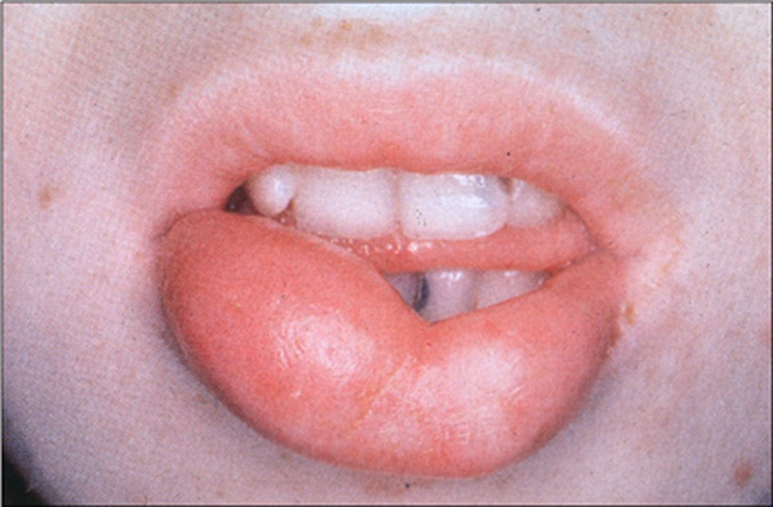
Fig 6.13 Hereditary angioedema. Note what is not there: no weals, no erythematous urticarial plaques, no excoriation from scratching. The swelling is deep, of normal skin colour and sharply localised — the appearance of oedema, not of an allergic reaction.آنژیوادم ارثی. به آنچه نیست توجه کنید: نه کهیر، نه پلاکهای اریتماتوی کهیری، نه خراش ناشی از خاراندن. تورم عمقی، همرنگ پوست طبیعی و بهروشنی موضعی است — نمای ادم، نه واکنش آلرژیک.
Exam Trap — hereditary versus allergic angioedemaدام امتحانی — آنژیوادم ارثی در برابر آلرژیک
Hereditary (C1-INH)ارثی (C1-INH)
Allergic (IgE/histamine)آلرژیک (IgE/هیستامین)
Mediatorواسطه
Bradykininبرادیکینین
Histamineهیستامین
Urticaria / itchکهیر / خارش
Absentندارد
Presentدارد
Onsetشروع
Hours, lasting daysساعتها، ماندگار تا چند روز
Minutes, resolving in hoursدقیقهها، فروکش طی ساعتها
Family historyسابقهٔ خانوادگی
Usually positive, autosomal dominantمعمولاً مثبت، اتوزومال غالب
Not characteristicمشخصه نیست
C4 levelسطح C4
Low, even between attacksپایین، حتی میان حملهها
Normalطبیعی
Response to antihistamine, steroid, adrenalineپاسخ به آنتیهیستامین، کورتیکواستروئید، آدرنالین
Complement and infection — the two-edged partکمپلمان و عفونت — بخش دولبه
The lecture closes the disease section with viruses, and the point is that complement is not uniformly good for the host.درس، بخش بیماری را با ویروسها میبندد، و نکته این است که کمپلمان برای میزبان یکسره خوب نیست.
Table 6.6 Complement and viral infectionجدول ۶.۶ — کمپلمان و عفونت ویروسی
What complement doesکمپلمان چه میکند
For the hostبرای میزبان
Explanationتوضیح
Forms larger viral aggregatesتودههای ویروسی بزرگتر میسازد
Goodخوب
Many virions clumped into one particle means fewer infectious units, even though the total amount of virus is unchangedویریونهای بسیار که در یک ذره توده شدهاند یعنی واحدهای عفونی کمتر، هرچند مقدار کل ویروس تغییر نکرده
Coats the particle with antibody and/or complement and blocks attachmentذره را با آنتیبادی و/یا کمپلمان میپوشاند و اتصال را مسدود میکند
Goodخوب
The receptor-binding site is physically covered, so the virion cannot dock on a susceptible cellجایگاه اتصال به گیرنده فیزیکی پوشانده میشود، پس ویریون نمیتواند روی سلول مستعد بنشیند
Lyses most enveloped virusesبیشتر ویروسهای پوششدار را لیز میکند
Goodخوب
The envelope is a lipid bilayer, so the MAC works on it exactly as it works on a Gram-negative outer membraneپوشش، دولایهٔ لیپیدی است، پس MAC دقیقاً همانطور رویش کار میکند که روی غشای بیرونی گرممنفی
Facilitates binding of the coated particle to cells bearing Fc or CR1اتصال ذرهٔ پوشیدهشده به سلولهای دارای Fc یا CR1 را تسهیل میکند
Badبد
The opsonin becomes a door key. A virus that can replicate in macrophages is handed a new route in — the basis of antibody-dependent enhancement, best known in dengueاپسونین به کلید در بدل میشود. ویروسی که میتواند در ماکروفاژ تکثیر شود، راه ورود تازهای مییابد — پایهٔ تقویت وابسته به آنتیبادی، مشهورترین نمونه در تب دنگی
Drives inflammation at the siteالتهاب را در محل میراند
Bothهر دو
Necessary for clearance, but excessive activation is itself the injury in ischaemia–reperfusion, ARDS and sepsis. This is why anti-C5 therapy existsبرای پاکسازی لازم است، اما فعالسازی بیش از حد، خودش آسیب است در ایسکمی–خونرسانی مجدد، ARDS و سپسیس. برای همین درمان ضد C5 وجود دارد
The summary the lecturer asks forخلاصهای که مدرّس میخواهد
The final slide of this lecture sets two tasks: “Review the differences between the three activation pathways of complement” and “Function of complement and its regulation.” Both are answered in full by the master tables in Part 7 — go there next and use them as the revision sheet.اسلاید پایانی این درس دو کار میخواهد: «تفاوتهای سه مسیر فعالسازی کمپلمان را مرور کنید» و «عملکرد کمپلمان و تنظیم آن.» هر دو را جدولهای اصلی بخش ۷ بهتمامی پاسخ میدهند — سراغشان بروید و همانها را برگهٔ مرور خود کنید.